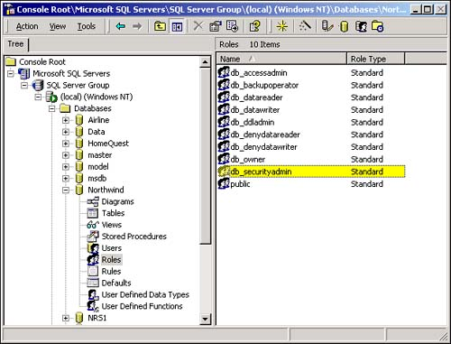
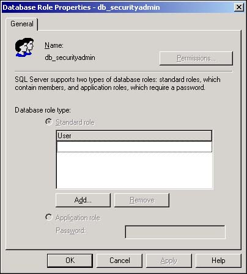
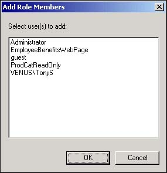

Creating database accounts and assigning permissions is obviously a lot of work. When you consider that most SQL Server installations service dozens to hundreds of users, it's easy to see that a considerable amount of time and effort goes into administering database security. All in all, creating and managing a database security scheme is one of the most time- and effort-intensive tasks of any database administrator.
Fortunately, SQL Server provides a tool to considerably lighten this administrative load. As you'll see in this section, SQL Server makes it easy to assign predefined permissions to groups of users rather than individually handling each user.
Setting up database object permissions for individual users is a hassle. Every time a user account is added to SQL Server, the permissions on database objects must be set for the user. I'd like to be able to minimize the amount of time spent designing individual object permissions for my users.
SQL Server defines many built-in fixed database roles that grant or deny permissions on database objects. Each fixed database role adds or subtracts permissions on all the tables, stored procedures, or other database objects within the database. A user who is added to a fixed database role inherits all the permissions specified by the role. A person can belong to multiple roles, if necessary.
A fixed database role is similar in some ways to the fixed server roles discussed earlier in this chapter. The difference is that fixed database roles determine permissions to perform operations on objects within a single database, whereas fixed server roles specify the administrative operations that are permitted on all SQL Server databases.
SQL Server defines 10 different fixed database roles:
db_owner. As owners of the database, members of this role can perform any task that is granted to the other fixed database roles. The db_owner role includes all administrative, design, and data access permissions.
db_accessadmin. The db_accessadmin role manages the creation of new logins and accounts. These logins and accounts include individual users as well as groups of users.
db_datareader. This role is able to view all data from all tables in the database.
db_datawriter. The db_datawriter role is able to add, update, or delete data from all the tables in the database.
db_ddladmin. This role can modify objects within the database. This means that db_ddladmin users can add or delete tables or modify the design of existing tables.
db_securityadmin. Members of the db_securityadmin role manage security on the database. This means they can add new roles and manage statement and object permissions within the database.
db_backupoperator. This role is responsible for backing up the database.
db_denydatareader. Members of this role are unable to view data in the database. This role is useful for data entry clerks whose job is inputting new data without viewing existing records.
db_denydatawriter. Use this role to prevent users from changing data in the database. This is useful, for instance, for clerical and management staff who are supposed to be able to read, but not update, data.
public. This role is for all users of the database that don't have specifically defined roles or permissions in the database. You can edit the permissions of the public role, but be careful.
The db_prefix on each of these roles is significant. It's there to help distinguish between fixed server roles (explained earlier in this How-To and discussed in the following section) from the fixed database roles explained in this section.
Open Enterprise Manager and expand the Northwind database's icon.
Locate and expand the Northwind database's Roles icon to display the fixed database roles in Enterprise Manager's right pane (see Figure 11.19).

Right-click on a role (such as db_securityadmin) in the Roles list, and select Properties from the shortcut menu. You'll see the Database Role Properties dialog box (shown in Figure 11.20) open in response.

Click on the Add button to open the Add Role Members dialog box (see Figure 11.21). This dialog shows all database accounts that are not currently assigned to the selected role.

Click on any members you'd like to add to the selected role. The list box in the Add Role Members dialog box allows you to select multiple logins at one time.
When you are satisfied with your selections, click the OK button to close the Add Role Members dialog box; then close the Database Role Properties dialog box by clicking on its OK button.
The fixed database roles are not to be confused with the similar fixed server roles. Each fixed database role applies only to a single database. The members you add to a role are only able to operate with the role inside of the selected database. Fixed server roles, on the other hand, affect all databases within SQL Server as well as SQL Server.
Therefore, fixed database role security is the ideal way to assign specific permissions on a single database. This can be useful to allow departmental groups within a company to manage their own databases. Because relatively small amounts of data are influenced by fixed database roles (this depends, of course, on the type and size of the database), it isn't as likely that a poorly trained individual will damage the data within SQL Server.